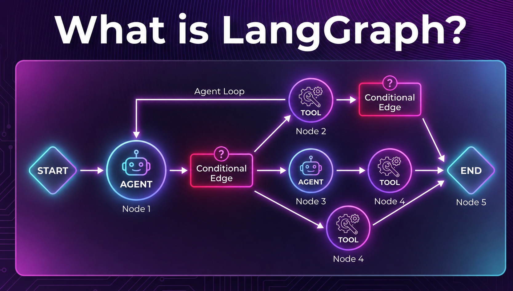

1LLM vs AI Agent
💬 LLM thuần (chatbot)
- 📥 Nhận prompt → 📤 trả 1 câu trả lời
- ❌ Không tự gọi API / truy vấn DB
- ❌ Không nhớ gì giữa các bước
- ❌ Kiến thức "đóng băng" tại thời điểm train
🤖 AI Agent
- 🔁 Lặp: suy luận → hành động → quan sát
- 🔧 Gọi tool: SQL, API, search, code...
- 📦 Nhớ ngữ cảnh & kết quả qua State
- 🎯 Tự quyết định khi nào "đã xong"
Một AI Agent gồm 4 thành phần:
Model (Bộ não)
LLM suy luận & quyết định bước tiếp theo: cần gọi tool nào, hay đã đủ để trả lời.
Tools (Công cụ)
Hàm để Agent "với tay" ra thế giới thật: truy vấn DB, gọi API, tìm web, tính toán.
Memory (Bộ nhớ)
Lưu lịch sử hội thoại + kết quả tool để Agent không "quên" giữa các bước.
Loop (Vòng điều khiển)
Điều phối: gọi model → chạy tool → đưa kết quả lại model → lặp đến khi đạt mục tiêu.
2 LangGraph là gì?
LangGraph là thư viện Python cho phép xây dựng AI Agent dưới dạng đồ thị có trạng thái (stateful directed graph). Thay vì một chuỗi prompt tuyến tính A → B → C, LangGraph cho phép agent lặp lại, rẽ nhánh, gọi tool nhiều lần và nhớ toàn bộ lịch sử.
Nó xây dựng trên LangChain nhưng giải quyết bài toán khác: điều phối luồng chạy của agent — không chỉ kết nối các bước đơn giản.

3 ReAct Agent – Vòng lặp "Suy luận → Hành động"
ReAct (Reasoning + Acting) là pattern phổ biến nhất: LLM đọc State, quyết định có cần gọi tool không, nếu có thì gọi rồi xem kết quả, lặp cho đến khi đủ thông tin để trả lời.
tool_calls? → sang Tool Node. Không có? → END.4 Supervisor Pattern – Điều phối nhiều agent
ReAct ở trên là một agent tự lặp. Khi bài toán cần
nhiều agent chuyên biệt, ta đặt một
Supervisor ở trung tâm: nó đọc State, quyết định
agent nào xử lý tiếp (set state["next"]), agent chạy xong
trả kết quả về qua shared State, rồi Supervisor lại quyết định — cho đến khi FINISH.
state["next"] → đi tới Agent tương ứng. Nếu xong việc → FINISH → END.6 LangGraph vs LangChain
| Tiêu chí | ⛓️ LangChain | 🔷 LangGraph |
|---|---|---|
| Mô hình luồng | Chuỗi tuyến tính: A → B → C | Đồ thị có hướng, nhánh & vòng lặp |
| Vòng lặp (Cycle) | Không – không hỗ trợ natively | Có – built-in, qua conditional edge |
| State quản lý | Hạn chế – pass-through, không persistent | Mạnh – TypedDict + Reducer + Checkpointing |
| Human-in-the-Loop | Khó – phải tự implement | Dễ – interrupt/resume từ checkpoint |
| Multi-Agent | Cơ bản – AgentExecutor đơn lẻ | Mạnh – Subgraph, Supervisor pattern |
| Độ phức tạp | Thấp – ít boilerplate, dễ học | Trung bình – cần hiểu Graph, State, Reducer |
| Use case chính | RAG, QA, Summarization, pipeline cố định | Agent phức tạp, multi-step, long-running |
| Quan hệ | Độc lập | Xây trên LangChain – dùng chung tools, LLMs, prompts |
⛓️ Dùng LangChain khi:
- ✅ Pipeline đơn giản, output dự đoán được
- ✅ RAG, Document QA, Summarization
- ✅ Prototype nhanh, ít boilerplate
- ✅ Team mới bắt đầu với LLM
🔷 Dùng LangGraph khi:
- ✅ Agent cần loop, retry, tự sửa lỗi
- ✅ Nhiều agent phối hợp (supervisor)
- ✅ Cần human review giữa chừng
- ✅ Long-running, crash recovery